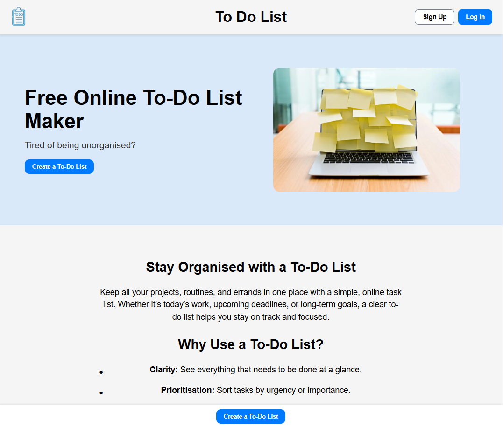
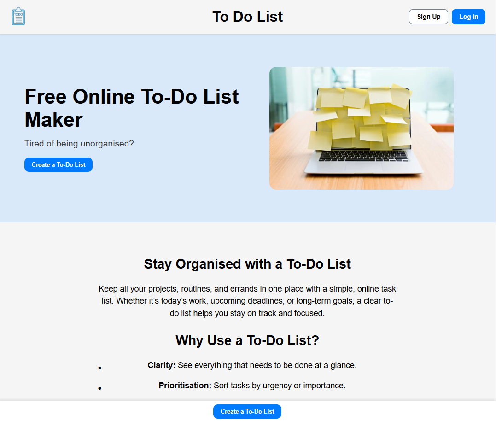

Free Online To-Do List Maker
Tired of being unorganised?
Stay Organised with a To-Do List
Keep all your projects, routines, and errands in one place with a simple, online task list. Whether it’s today’s work, upcoming deadlines, or long-term goals, a clear to-do list helps you stay on track and focused.
Why Use a To-Do List?
Clarity: See everything that needs to be done at a glance.
Prioritisation: Sort tasks by urgency or importance.
Flexibility: Update and edit in real-time across devices.
Motivation: Nothing beats the satisfaction of checking tasks off.
Tips for an Effective To-Do List
Break down big projects into smaller tasks.
Organise by priority, deadline, or time of day.
Keep your wording action oriented (e.g. Fix login bug instead of Do coding).
Add context if needed (links, notes).
Keep It Visual
 

A good to-do list isn't just functional, it should be easy to read and fun to use. Use headings, labels, and checkboxes to keep everything structured.
Stay Synced
Your list should move with you. Start it on your laptop, update it on your phone, and share it with your teammates. That way everyone knows what's done and what still needs work.